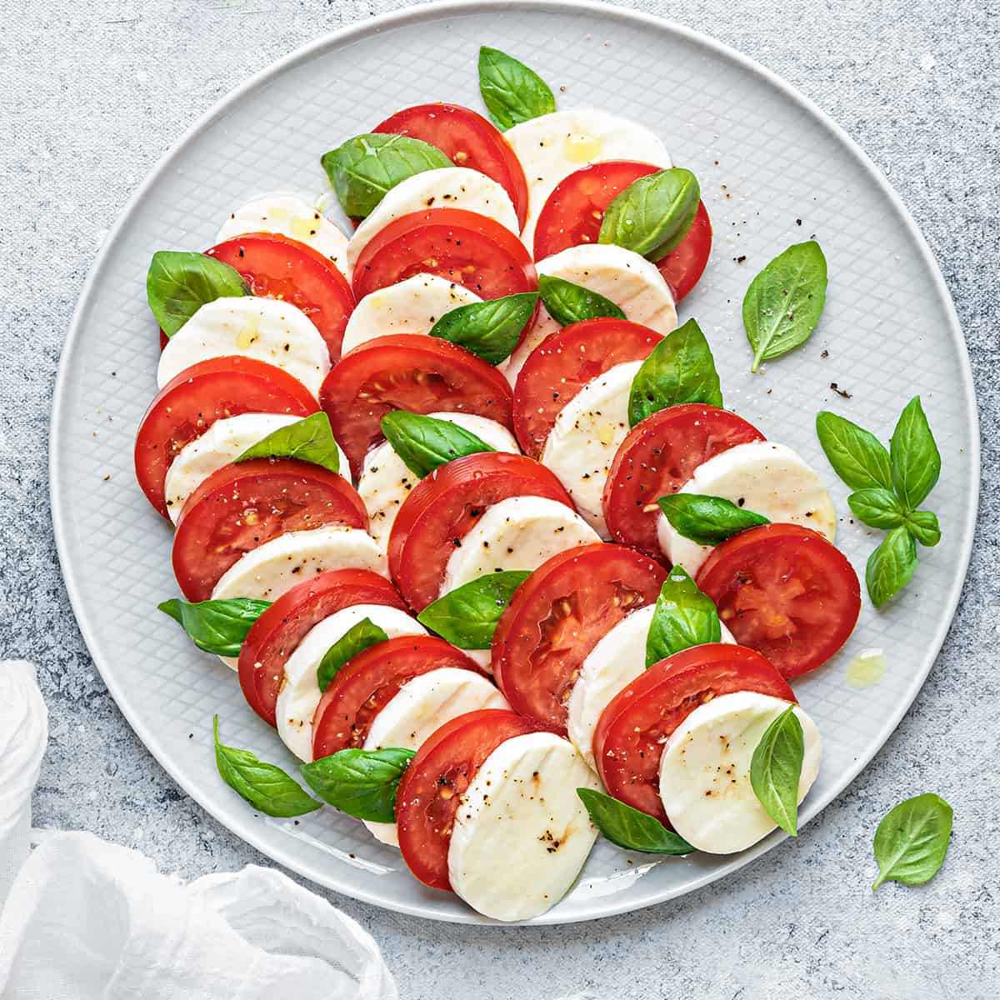

Caprese Salad

Description
This classic Caprese Salad is a simple yet delicious dish that highlights the flavors of ripe tomatoes, creamy
mozzarella, and fragrant basil. It's perfect as an appetizer or a light side dish for any meal.
Ingredients:
- Fresh tomatoes (2-3 medium-sized)
- Fresh mozzarella cheese (1 ball or about 8 ounces)
- Fresh basil leaves (a handful)
- Extra-virgin olive oil
- Balsamic vinegar (optional)
- Salt and pepper to taste
Steps:
- Slice the Tomatoes: Wash and slice the fresh tomatoes into rounds, about 1/4-inch thick.
- Slice the Mozzarella: Similarly, slice the fresh mozzarella cheese into rounds, similar in thickness to the tomatoes.
- Arrange on a Plate: Begin by arranging the tomato and mozzarella slices on a serving plate. You can alternate them for a visually appealing presentation.
- Add Fresh Basil: Wash and dry the fresh basil leaves. Place a basil leaf between each tomato and mozzarella slice. You can also tear the basil leaves into smaller pieces and scatter them over the top.
- Drizzle with Olive Oil: Drizzle extra-virgin olive oil over the tomato, mozzarella, and basil. Use a good quality olive oil for the best flavor.
- Balsamic Vinegar (Optional): If desired, you can also add a drizzle of balsamic vinegar for extra flavor. Balsamic reduction or glaze can also be used for a sweeter touch.
- Season: Sprinkle salt and freshly ground black pepper over the salad to taste. Remember that the mozzarella can be a bit salty, so adjust accordingly.
- Serve: Your Caprese Salad is ready to be served. It's best enjoyed fresh and at room temperature.